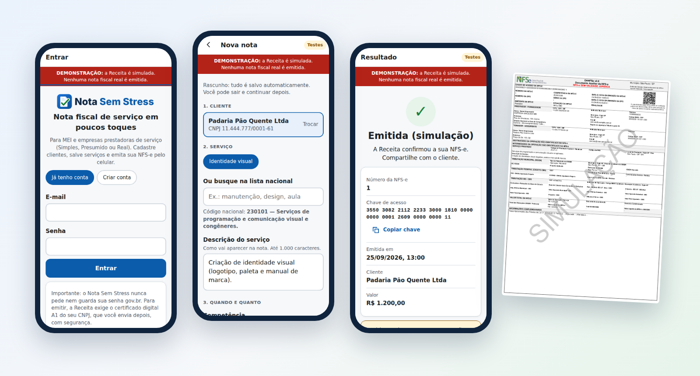
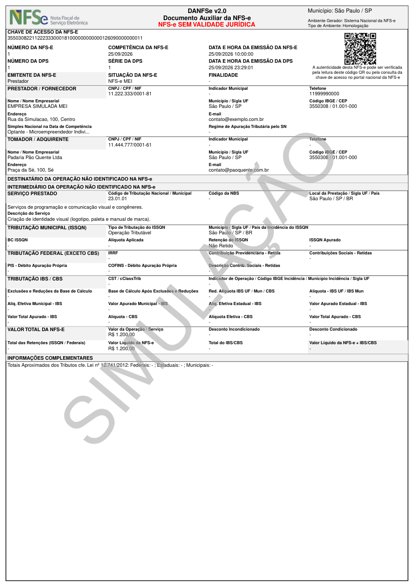

Nota fiscal de serviço sem stress, pelo celular.
App instalável para emitir a NFS-e do Padrão Nacional em poucos toques. Feito para MEI e pequenas empresas: ME/EPP do Simples, Lucro Presumido e Lucro Real.

Menos burocracia, nenhuma surpresa
Tudo o que um prestador de serviço precisa para emitir a nota do mês, com as regras oficiais conferidas antes de enviar.
Clonar a última nota
Mesmo cliente e mesmo serviço, com novos identificadores. O app pede para conferir competência, valor, descrição e tributação.
Regras oficiais antes do envio
As validações do Anexo I rodam no app e aparecem em linguagem comum, com o que fazer para corrigir.
Nunca uma nota em dobro
Se a Receita não responde, o Nota Sem Stress consulta antes de reenviar e reenvia a mesma DPS assinada.
DANFSe e XML para o cliente
PDF no modelo da NT 008 com QR Code, enviado junto com o XML pelo WhatsApp ou e-mail.
Rascunho sem internet
Prepare a nota em qualquer lugar. O app avisa com clareza que ela ainda não foi emitida.
Dados protegidos
Não pedimos a senha gov.br. Certificado, CPF, CNPJ e clientes ficam cifrados, e toda operação é registrada.
Como funciona
Três passos, uma vez só. Depois, cada nota leva menos de um minuto.
- Crie a conta e o perfilCNPJ, município e regime. O app mostra exatamente o que falta para emitir.
- Envie o certificado A1Uma única vez, com consentimento. Ele fica cifrado no servidor, nunca no celular.
- Emita e compartilheEscolha o cliente e o serviço, revise e toque em "Emitir nota". Pronto: DANFSe e XML para enviar.
Para quem
Cada regime tem o seu pacote de regras, com a vigência oficial. Os campos extras só aparecem quando a regra exige.
| Regime | O que o Nota Sem Stress resolve |
|---|---|
| MEI | Tributação do MEI já preenchida. Você só escolhe cliente, serviço e valor. |
| ME/EPP do Simples | Convênio do município, ISS retido pelo cliente, ISS fora do Simples e percentual aproximado de tributos. |
| Lucro Presumido e Real | PIS/COFINS, retenções federais (NT 007) e o grupo IBS/CBS com as opções oficiais para cada serviço. |
DANFSe local, no modelo da NT 008
A Receita desativou a API de DANFSe em 03/08/2026. O Nota Sem Stress gera o PDF a partir do XML oficial da NFS-e, nunca do rascunho.
- A4 retrato, página única, blocos e grade do Anexo I
- QR Code da Consulta Pública com a chave de acesso
- "NFS-e SEM VALIDADE JURÍDICA" em homologação
- Descrições no lugar de códigos e supressões permitidas
- Totais aproximados dos tributos (Lei 12.741/2012)

Experimente em 1 minuto
Requisito: Node.js 22.13 ou mais recente.
git clone https://github.com/fredabsd-svg/nota-sem-stress.git
cd nota-sem-stress/server
npm install
npm run demo # http://localhost:8080 com a Receita SIMULADA
npm test # 38 testesO terminal mostra um CNPJ e um certificado fictícios. Uma faixa vermelha fixa avisa que nenhuma nota real é emitida.
Requisitos oficiais · Todas as telas · Testes e homologação · Plano para as lojas